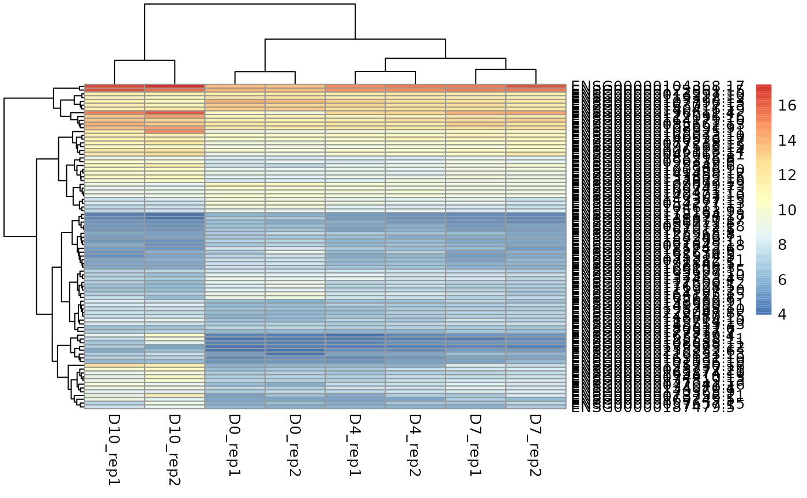
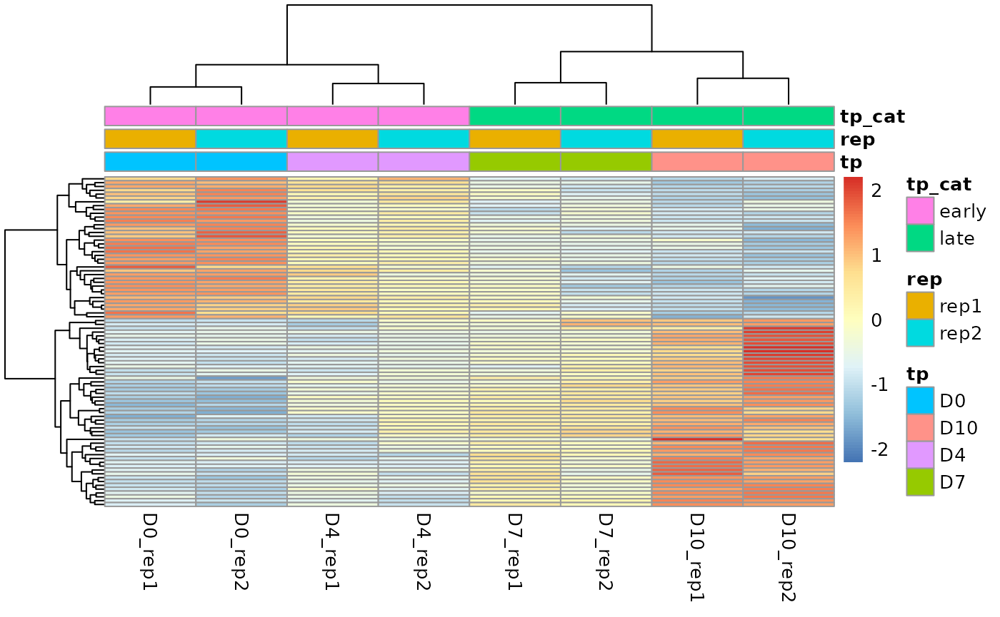

S4 classes are the perfect examples of the OO programming: - stricter structure - they have representations: a list of slots or arguments by name and class - the slots have to have the correct type - methods - they also inherit the methods from the classes of the arguments, but inheritence is between S4 classes as well. - has to be created with the new constructor - they have accessor methods as well.
setClass("Person", representation(name = "character", age = "numeric"))
setClass("Employee", representation(boss = "Person"), contains = "Person")
person1 <- new("Person", name="Peter", age=34)
boss1 <- new("Employee", boss=person1, name="Lisa", age=36)
person1## An object of class "Person"
## Slot "name":
## [1] "Peter"
##
## Slot "age":
## [1] 34
boss1## An object of class "Employee"
## Slot "boss":
## An object of class "Person"
## Slot "name":
## [1] "Peter"
##
## Slot "age":
## [1] 34
##
##
## Slot "name":
## [1] "Lisa"
##
## Slot "age":
## [1] 36Example class: SummarizedExperiment
Representation:
RangedSummarizedExperiment is an extension of SummarizedExperiment. It uses GRanges to define the genomic regions.
## Loading required package: MatrixGenerics## Loading required package: matrixStats##
## Attaching package: 'MatrixGenerics'## The following objects are masked from 'package:matrixStats':
##
## colAlls, colAnyNAs, colAnys, colAvgsPerRowSet, colCollapse,
## colCounts, colCummaxs, colCummins, colCumprods, colCumsums,
## colDiffs, colIQRDiffs, colIQRs, colLogSumExps, colMadDiffs,
## colMads, colMaxs, colMeans2, colMedians, colMins, colOrderStats,
## colProds, colQuantiles, colRanges, colRanks, colSdDiffs, colSds,
## colSums2, colTabulates, colVarDiffs, colVars, colWeightedMads,
## colWeightedMeans, colWeightedMedians, colWeightedSds,
## colWeightedVars, rowAlls, rowAnyNAs, rowAnys, rowAvgsPerColSet,
## rowCollapse, rowCounts, rowCummaxs, rowCummins, rowCumprods,
## rowCumsums, rowDiffs, rowIQRDiffs, rowIQRs, rowLogSumExps,
## rowMadDiffs, rowMads, rowMaxs, rowMeans2, rowMedians, rowMins,
## rowOrderStats, rowProds, rowQuantiles, rowRanges, rowRanks,
## rowSdDiffs, rowSds, rowSums2, rowTabulates, rowVarDiffs, rowVars,
## rowWeightedMads, rowWeightedMeans, rowWeightedMedians,
## rowWeightedSds, rowWeightedVars## Loading required package: GenomicRanges## Loading required package: stats4## Loading required package: BiocGenerics##
## Attaching package: 'BiocGenerics'## The following objects are masked from 'package:stats':
##
## IQR, mad, sd, var, xtabs## The following objects are masked from 'package:base':
##
## anyDuplicated, append, as.data.frame, basename, cbind, colnames,
## dirname, do.call, duplicated, eval, evalq, Filter, Find, get, grep,
## grepl, intersect, is.unsorted, lapply, Map, mapply, match, mget,
## order, paste, pmax, pmax.int, pmin, pmin.int, Position, rank,
## rbind, Reduce, rownames, sapply, setdiff, sort, table, tapply,
## union, unique, unsplit, which.max, which.min## Loading required package: S4Vectors##
## Attaching package: 'S4Vectors'## The following objects are masked from 'package:base':
##
## expand.grid, I, unname## Loading required package: IRanges## Loading required package: GenomeInfoDb## Loading required package: Biobase## Welcome to Bioconductor
##
## Vignettes contain introductory material; view with
## 'browseVignettes()'. To cite Bioconductor, see
## 'citation("Biobase")', and for packages 'citation("pkgname")'.##
## Attaching package: 'Biobase'## The following object is masked from 'package:MatrixGenerics':
##
## rowMedians## The following objects are masked from 'package:matrixStats':
##
## anyMissing, rowMedians
#data("airway_small", package="BasicR")
load("../data/airway_small.rda")
se <- airway_smallAccessors
To know all this, look for the help and the vignette.
colData(se)## DataFrame with 8 rows and 9 columns
## SampleName cell dex albut Run avgLength
## <factor> <factor> <factor> <factor> <factor> <integer>
## SRR1039508 GSM1275862 N61311 untrt untrt SRR1039508 126
## SRR1039509 GSM1275863 N61311 trt untrt SRR1039509 126
## SRR1039512 GSM1275866 N052611 untrt untrt SRR1039512 126
## SRR1039513 GSM1275867 N052611 trt untrt SRR1039513 87
## SRR1039516 GSM1275870 N080611 untrt untrt SRR1039516 120
## SRR1039517 GSM1275871 N080611 trt untrt SRR1039517 126
## SRR1039520 GSM1275874 N061011 untrt untrt SRR1039520 101
## SRR1039521 GSM1275875 N061011 trt untrt SRR1039521 98
## Experiment Sample BioSample
## <factor> <factor> <factor>
## SRR1039508 SRX384345 SRS508568 SAMN02422669
## SRR1039509 SRX384346 SRS508567 SAMN02422675
## SRR1039512 SRX384349 SRS508571 SAMN02422678
## SRR1039513 SRX384350 SRS508572 SAMN02422670
## SRR1039516 SRX384353 SRS508575 SAMN02422682
## SRR1039517 SRX384354 SRS508576 SAMN02422673
## SRR1039520 SRX384357 SRS508579 SAMN02422683
## SRR1039521 SRX384358 SRS508580 SAMN02422677
rowData(se)## DataFrame with 4001 rows and 0 columns
#assay(se)
rowRanges(se)## GRangesList object of length 4001:
## $ENSG00000000003
## GRanges object with 17 ranges and 2 metadata columns:
## seqnames ranges strand | exon_id exon_name
## <Rle> <IRanges> <Rle> | <integer> <character>
## [1] X 99883667-99884983 - | 667145 ENSE00001459322
## [2] X 99885756-99885863 - | 667146 ENSE00000868868
## [3] X 99887482-99887565 - | 667147 ENSE00000401072
## [4] X 99887538-99887565 - | 667148 ENSE00001849132
## [5] X 99888402-99888536 - | 667149 ENSE00003554016
## ... ... ... ... . ... ...
## [13] X 99890555-99890743 - | 667156 ENSE00003512331
## [14] X 99891188-99891686 - | 667158 ENSE00001886883
## [15] X 99891605-99891803 - | 667159 ENSE00001855382
## [16] X 99891790-99892101 - | 667160 ENSE00001863395
## [17] X 99894942-99894988 - | 667161 ENSE00001828996
## -------
## seqinfo: 722 sequences (1 circular) from an unspecified genome
##
## ...
## <4000 more elements>## SRR1039508 SRR1039509 SRR1039512 SRR1039513 SRR1039516
## ENSG00000000003 679 448 873 408 1138
## ENSG00000000005 0 0 0 0 0
## ENSG00000000419 467 515 621 365 587
## ENSG00000000457 260 211 263 164 245
## ENSG00000000460 60 55 40 35 78
## ENSG00000000938 0 0 2 0 1
## SRR1039517 SRR1039520 SRR1039521
## ENSG00000000003 1047 770 572
## ENSG00000000005 0 0 0
## ENSG00000000419 799 417 508
## ENSG00000000457 331 233 229
## ENSG00000000460 63 76 60
## ENSG00000000938 0 0 0
head(metadata(airway_small))## [[1]]
## Experiment data
## Experimenter name: Himes BE
## Laboratory: NA
## Contact information:
## Title: RNA-Seq transcriptome profiling identifies CRISPLD2 as a glucocorticoid responsive gene that modulates cytokine function in airway smooth muscle cells.
## URL: http://www.ncbi.nlm.nih.gov/pubmed/24926665
## PMIDs: 24926665
##
## Abstract: A 226 word abstract is available. Use 'abstract' method.You can access each data “natively”, and even change it, but you shouldn’t do that. Why? It is easy to screw it up…
se@rowRanges## GRangesList object of length 4001:
## $ENSG00000000003
## GRanges object with 17 ranges and 2 metadata columns:
## seqnames ranges strand | exon_id exon_name
## <Rle> <IRanges> <Rle> | <integer> <character>
## [1] X 99883667-99884983 - | 667145 ENSE00001459322
## [2] X 99885756-99885863 - | 667146 ENSE00000868868
## [3] X 99887482-99887565 - | 667147 ENSE00000401072
## [4] X 99887538-99887565 - | 667148 ENSE00001849132
## [5] X 99888402-99888536 - | 667149 ENSE00003554016
## ... ... ... ... . ... ...
## [13] X 99890555-99890743 - | 667156 ENSE00003512331
## [14] X 99891188-99891686 - | 667158 ENSE00001886883
## [15] X 99891605-99891803 - | 667159 ENSE00001855382
## [16] X 99891790-99892101 - | 667160 ENSE00001863395
## [17] X 99894942-99894988 - | 667161 ENSE00001828996
## -------
## seqinfo: 722 sequences (1 circular) from an unspecified genome
##
## ...
## <4000 more elements>
se@metadata## [[1]]
## Experiment data
## Experimenter name: Himes BE
## Laboratory: NA
## Contact information:
## Title: RNA-Seq transcriptome profiling identifies CRISPLD2 as a glucocorticoid responsive gene that modulates cytokine function in airway smooth muscle cells.
## URL: http://www.ncbi.nlm.nih.gov/pubmed/24926665
## PMIDs: 24926665
##
## Abstract: A 226 word abstract is available. Use 'abstract' method.
###don't do this:
se@rowRanges <- se@rowRanges[1:3000]
se## class: RangedSummarizedExperiment
## dim: 4001 8
## metadata(1): ''
## assays(1): counts
## rownames(3000): ENSG00000000003 ENSG00000000005 ... ENSG00000162951
## ENSG00000162959
## rowData names(0):
## colnames(8): SRR1039508 SRR1039509 ... SRR1039520 SRR1039521
## colData names(9): SampleName cell ... Sample BioSample
se@rowRanges## GRangesList object of length 3000:
## $ENSG00000000003
## GRanges object with 17 ranges and 2 metadata columns:
## seqnames ranges strand | exon_id exon_name
## <Rle> <IRanges> <Rle> | <integer> <character>
## [1] X 99883667-99884983 - | 667145 ENSE00001459322
## [2] X 99885756-99885863 - | 667146 ENSE00000868868
## [3] X 99887482-99887565 - | 667147 ENSE00000401072
## [4] X 99887538-99887565 - | 667148 ENSE00001849132
## [5] X 99888402-99888536 - | 667149 ENSE00003554016
## ... ... ... ... . ... ...
## [13] X 99890555-99890743 - | 667156 ENSE00003512331
## [14] X 99891188-99891686 - | 667158 ENSE00001886883
## [15] X 99891605-99891803 - | 667159 ENSE00001855382
## [16] X 99891790-99892101 - | 667160 ENSE00001863395
## [17] X 99894942-99894988 - | 667161 ENSE00001828996
## -------
## seqinfo: 722 sequences (1 circular) from an unspecified genome
##
## ...
## <2999 more elements>Methods
subsetting
# subsetting is very easy, just like with a data.frame
se <- se[1:2000,]
se <- se[,1:3]
se## class: RangedSummarizedExperiment
## dim: 2000 3
## metadata(1): ''
## assays(1): counts
## rownames(2000): ENSG00000000003 ENSG00000000005 ... ENSG00000092758
## ENSG00000092820
## rowData names(0):
## colnames(3): SRR1039508 SRR1039509 SRR1039512
## colData names(9): SampleName cell ... Sample BioSampleCombining
rowbinded <- rbind(se, se)
rowbinded## class: RangedSummarizedExperiment
## dim: 4000 3
## metadata(2): '' ''
## assays(1): counts
## rownames(4000): ENSG00000000003 ENSG00000000005 ... ENSG00000092758
## ENSG00000092820
## rowData names(0):
## colnames(3): SRR1039508 SRR1039509 SRR1039512
## colData names(9): SampleName cell ... Sample BioSample
colbinded <- cbind(se, se)
colbinded## class: RangedSummarizedExperiment
## dim: 2000 6
## metadata(2): '' ''
## assays(1): counts
## rownames(2000): ENSG00000000003 ENSG00000000005 ... ENSG00000092758
## ENSG00000092820
## rowData names(0):
## colnames(6): SRR1039508 SRR1039509 ... SRR1039509 SRR1039512
## colData names(9): SampleName cell ... Sample BioSample
roi <- GRanges(seqnames="X", ranges=99800000:99850000)
se_1 <- subsetByOverlaps(se, roi)Granges and GRangesList
GRanges objects store information about Genomic ranges with chromosome, position and additional information. Offers a wide range of functionality. GRangesList is a “grouped” version of GRnages, it is similar to a normal list, but with additional functionality. Both of them are able to handle strand information as well.
library(GenomicRanges)
gr1 <- GRanges(
seqnames = "chr2",
ranges = IRanges(103, 106),
strand = "+",
score = 5L, GC = 0.45)
gr2 <- GRanges(
seqnames = c("chr1", "chr3"),
ranges = IRanges(c(107, 113), width = 3),
strand = c("+", "-"),
score = 3:4, GC = c(0.3, 0.5))
gr3 <- GRanges("chr2:102-107")
gr4 <- makeGRangesFromDataFrame(data.frame(chr=c("chr1", "chr2"),
start=c(104, 104), end=c(108, 105),
name=c("gene1", "gene2")), keep.extra.columns = T, ignore.strand = T)
grl <- GRangesList("txA" = gr1, "txB" = gr2)
grl## GRangesList object of length 2:
## $txA
## GRanges object with 1 range and 2 metadata columns:
## seqnames ranges strand | score GC
## <Rle> <IRanges> <Rle> | <integer> <numeric>
## [1] chr2 103-106 + | 5 0.45
## -------
## seqinfo: 3 sequences from an unspecified genome; no seqlengths
##
## $txB
## GRanges object with 2 ranges and 2 metadata columns:
## seqnames ranges strand | score GC
## <Rle> <IRanges> <Rle> | <integer> <numeric>
## [1] chr1 107-109 + | 3 0.3
## [2] chr3 113-115 - | 4 0.5
## -------
## seqinfo: 3 sequences from an unspecified genome; no seqlengths
#seqinfo(gr1) <- Seqinfo(genome="hg38")
#can have names for each rowAccessors
seqnames(gr1)## factor-Rle of length 1 with 1 run
## Lengths: 1
## Values : chr2
## Levels(1): chr2
seqlevels(gr1)## [1] "chr2"
ranges(gr1)## IRanges object with 1 range and 0 metadata columns:
## start end width
## <integer> <integer> <integer>
## [1] 103 106 4
start(gr1)## [1] 103
end(gr1)## [1] 106
strand(gr1)## factor-Rle of length 1 with 1 run
## Lengths: 1
## Values : +
## Levels(3): + - *
width(gr1)## [1] 4
length(gr1)## [1] 1
mcols(gr4)## DataFrame with 2 rows and 1 column
## name
## <character>
## 1 gene1
## 2 gene2
mcols(gr4)$name## [1] "gene1" "gene2"Subsetting
#data.frame-like
gr1[1,]## GRanges object with 1 range and 2 metadata columns:
## seqnames ranges strand | score GC
## <Rle> <IRanges> <Rle> | <integer> <numeric>
## [1] chr2 103-106 + | 5 0.45
## -------
## seqinfo: 1 sequence from an unspecified genome; no seqlengths
gr4[1, "name"]## GRanges object with 1 range and 1 metadata column:
## seqnames ranges strand | name
## <Rle> <IRanges> <Rle> | <character>
## [1] chr1 104-108 * | gene1
## -------
## seqinfo: 2 sequences from an unspecified genome; no seqlengths
# subset function
subset(gr1, strand == "+")## GRanges object with 1 range and 2 metadata columns:
## seqnames ranges strand | score GC
## <Rle> <IRanges> <Rle> | <integer> <numeric>
## [1] chr2 103-106 + | 5 0.45
## -------
## seqinfo: 1 sequence from an unspecified genome; no seqlengthsSplitting and combining
## GRangesList object of length 2:
## $gene1
## GRanges object with 1 range and 1 metadata column:
## seqnames ranges strand | name
## <Rle> <IRanges> <Rle> | <character>
## [1] chr1 104-108 * | gene1
## -------
## seqinfo: 2 sequences from an unspecified genome; no seqlengths
##
## $gene2
## GRanges object with 1 range and 1 metadata column:
## seqnames ranges strand | name
## <Rle> <IRanges> <Rle> | <character>
## [1] chr2 104-105 * | gene2
## -------
## seqinfo: 2 sequences from an unspecified genome; no seqlengths
c(sp[[1]], sp[[2]])## GRanges object with 2 ranges and 2 metadata columns:
## seqnames ranges strand | score GC
## <Rle> <IRanges> <Rle> | <integer> <numeric>
## [1] chr1 107-109 + | 3 0.3
## [2] chr3 113-115 - | 4 0.5
## -------
## seqinfo: 2 sequences from an unspecified genome; no seqlengths
stack(sp, index.var="name")## GRanges object with 2 ranges and 3 metadata columns:
## seqnames ranges strand | name score GC
## <Rle> <IRanges> <Rle> | <Rle> <integer> <numeric>
## [1] chr1 107-109 + | 1 3 0.3
## [2] chr3 113-115 - | 2 4 0.5
## -------
## seqinfo: 2 sequences from an unspecified genome; no seqlengthsAggregating
aggregate(gr2, score ~ strand, mean)## DataFrame with 2 rows and 2 columns
## strand score
## <factor> <numeric>
## 1 + 3
## 2 - 4Interval operations
flank(gr1, 10, both=T)## GRanges object with 1 range and 2 metadata columns:
## seqnames ranges strand | score GC
## <Rle> <IRanges> <Rle> | <integer> <numeric>
## [1] chr2 93-112 + | 5 0.45
## -------
## seqinfo: 1 sequence from an unspecified genome; no seqlengths
shift(gr2, 5)## GRanges object with 2 ranges and 2 metadata columns:
## seqnames ranges strand | score GC
## <Rle> <IRanges> <Rle> | <integer> <numeric>
## [1] chr1 112-114 + | 3 0.3
## [2] chr3 118-120 - | 4 0.5
## -------
## seqinfo: 2 sequences from an unspecified genome; no seqlengths
resize(gr1, 20)## GRanges object with 1 range and 2 metadata columns:
## seqnames ranges strand | score GC
## <Rle> <IRanges> <Rle> | <integer> <numeric>
## [1] chr2 103-122 + | 5 0.45
## -------
## seqinfo: 1 sequence from an unspecified genome; no seqlengths
c(gr1, gr3)## GRanges object with 2 ranges and 2 metadata columns:
## seqnames ranges strand | score GC
## <Rle> <IRanges> <Rle> | <integer> <numeric>
## [1] chr2 103-106 + | 5 0.45
## [2] chr2 102-107 * | <NA> NA
## -------
## seqinfo: 1 sequence from an unspecified genome; no seqlengths## GRanges object with 2 ranges and 0 metadata columns:
## seqnames ranges strand
## <Rle> <IRanges> <Rle>
## [1] chr2 103-106 +
## [2] chr2 102-107 *
## -------
## seqinfo: 1 sequence from an unspecified genome; no seqlengths## GRanges object with 1 range and 0 metadata columns:
## seqnames ranges strand
## <Rle> <IRanges> <Rle>
## [1] chr2 102-107 *
## -------
## seqinfo: 1 sequence from an unspecified genome; no seqlengthsDeSeq2
##
## Attaching package: 'dplyr'## The following object is masked from 'package:Biobase':
##
## combine## The following objects are masked from 'package:GenomicRanges':
##
## intersect, setdiff, union## The following object is masked from 'package:GenomeInfoDb':
##
## intersect## The following objects are masked from 'package:IRanges':
##
## collapse, desc, intersect, setdiff, slice, union## The following objects are masked from 'package:S4Vectors':
##
## first, intersect, rename, setdiff, setequal, union## The following objects are masked from 'package:BiocGenerics':
##
## combine, intersect, setdiff, union## The following object is masked from 'package:matrixStats':
##
## count## The following objects are masked from 'package:stats':
##
## filter, lag## The following objects are masked from 'package:base':
##
## intersect, setdiff, setequal, union
count_mat <- read.delim("../inst/extdata/GSE139563_Processed_data_Paracrine_Senescence.txt.gz", skip=1)
count_mat <- count_mat[,grep("count", colnames(count_mat))]
meta <- read.delim("../inst/extdata//GSE139563_Processed_data_Paracrine_Senescence.txt.gz", header=F)
rownames(count_mat) <- meta$V1[-(1:2)]
names <- gsub(" ", "_", meta[1,][-(1:2)])
colnames(count_mat) <- names[names!=""]
colnames(count_mat) <- gsub("O", "0", colnames(count_mat))
coldata <- data.frame(row.names = colnames(count_mat), tp = gsub("(D[[:digit:]]+)_(rep[12])", "\\1", colnames(count_mat)),
rep=gsub("(D[[:digit:]]+)_(rep[12])", "\\2", colnames(count_mat))) |>
mutate(tp_cat=ifelse(tp %in% c("D0", "D4"), "early", "late"))
anno_df <- data.frame(
GeneID = meta$V1[-(1:2)],
gene_name = meta$V2[-(1:2)],
stringsAsFactors = FALSE,
row.names = meta$V1[-(1:2)]
)
library("DESeq2")
dds <- DESeqDataSetFromMatrix(countData = count_mat,
colData = coldata,
design = ~ tp_cat)## Warning in DESeqDataSet(se, design = design, ignoreRank): some variables in
## design formula are characters, converting to factors
dds## class: DESeqDataSet
## dim: 27696 8
## metadata(1): version
## assays(1): counts
## rownames(27696): ENSG00000238009.6 ENSG00000268903.1 ...
## ENSG00000210195.2 ENSG00000210196.2
## rowData names(0):
## colnames(8): D0_rep1 D0_rep2 ... D10_rep1 D10_rep2
## colData names(3): tp rep tp_cat
dds <- DESeq(dds)## estimating size factors## estimating dispersions## gene-wise dispersion estimates## mean-dispersion relationship## final dispersion estimates## fitting model and testing
res <- results(dds)
#res <- res[which(res$padj<0.05),]
ge_mat <- getVarianceStabilizedData(dds)
library(Glimma)
glMDSPlot(ge_mat, groups=coldata$tp, labels=rownames(coldata), launch=T, folder = "/glimma-plots", html = "MDS-Plot_full")
glMDPlot(res, counts=ge_mat, groups = dds@colData[,"tp"], anno=anno_df, main = "Results", status = as.numeric(res$padj<0.05), launch = T, folder = "/glimma-plots" , transform = F)
pheatmap(ge_mat[rownames(res)[which(res$padj<0.05)],], scale = "row", show_rownames = F, annotation_col = coldata)
## ## Registered S3 method overwritten by 'ggtree':
## method from
## identify.gg ggfun## clusterProfiler v4.2.2 For help: https://yulab-smu.top/biomedical-knowledge-mining-book/
##
## If you use clusterProfiler in published research, please cite:
## T Wu, E Hu, S Xu, M Chen, P Guo, Z Dai, T Feng, L Zhou, W Tang, L Zhan, X Fu, S Liu, X Bo, and G Yu. clusterProfiler 4.0: A universal enrichment tool for interpreting omics data. The Innovation. 2021, 2(3):100141##
## Attaching package: 'clusterProfiler'## The following object is masked from 'package:IRanges':
##
## slice## The following object is masked from 'package:S4Vectors':
##
## rename## The following object is masked from 'package:stats':
##
## filter
library(org.Hs.eg.db)## Loading required package: AnnotationDbi##
## Attaching package: 'AnnotationDbi'## The following object is masked from 'package:clusterProfiler':
##
## select## The following object is masked from 'package:dplyr':
##
## select##
ego <- enrichGO(gene = gsub("(ENSG[[:digit:]]*)(\\.[[:digit:]]+)", "\\1", rownames(res))[which(res$padj<0.05)],
universe = gsub("(ENSG[[:digit:]]*)(\\.[[:digit:]]+)", "\\1", rownames(res)),
OrgDb = org.Hs.eg.db,
keyType = "ENSEMBL",
ont = "MF",
pAdjustMethod = "BH",
pvalueCutoff = 0.01,
qvalueCutoff = 0.05,
readable = TRUE)